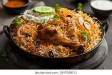

Chicken Biryani
Chicken Biryani is my all-time favorite food. It is a delicious rice dish
made with spiced chicken, fragrant basmati rice, and fresh herbs. It is
popular all over Pakistan and is perfect for any occasion.

Ingredients
- 1 kg Chicken
- 2 cups Basmati Rice
- 2 Onions
- 1 cup Yogurt
- Biryani Masala
- Oil
- Salt to taste
Cooking Steps
- Wash and soak the rice for 30 minutes.
- Fry onions in oil until golden brown.
- Add chicken and cook until it changes color.
- Add yogurt and biryani masala, mix well.
- Cook the chicken until tender.
- Boil the rice separately until half cooked.
- Layer the rice over the chicken.
- Cover and cook on low flame for 20 minutes.
- Mix gently and serve hot.
Extra Toppings and Side Items
- Toppings
- Fried onions
- Fresh coriander
- Lemon slices
- Side Items
- Raita (yogurt dip)
- Salad
- Papad
Learn More
For more details about this recipe, visit:
Biryani Recipe on AllRecipes